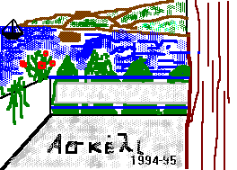

Mcsh-creation:: {2025-09-12}
description::
IT.NFO is a folio views 3.01 INFOBASE#cptIt929.1#.
Αυτή η βάση πληροφοριών περιέχει τις σημειώσεις μου πάνω στις πληροφοριακές τεχνολογίες, με μορφή δομημένου εννοιακού συστήματος.
Τα ονοματα εδώ θα ειναι στα αγγλικά.
1) ANALYTICAL-reading#cptIt0#
2) SYNTHETIC reading
3) RANDOM reading: f2 & synonyma

name::
* McsEngl.FvMcsIt.last.html//dirFolioViews,
* McsEngl.dirFolioViews/FvMcsIt.last.html,
* McsEngl.infobase.it,
* McsEngl.it!=ItSoftware-FolioViews-McsHitp,
* McsEngl.it.nfo@cptIt,
* McsEngl.it-infobase,
* McsEngl.mivIT:info-tech,
* McsEngl.nfo.it@cptIt,
====== langoGreek:
* McsElln.μοντελοΠτ@cptIt,
_EVOLUTING:
{1996-10}:
Καταστράφηκε το αρχείο it.nfo μαζί με το εφεδρικό. Βρήκα ένα παλιό του Απρ. 1995. Διατήρησα την ορολογία που είχα στο synonyma.nfo.
Η προσπάθεια να τοποθετώ τις έννοιες με βάση το θέμα τους ΔΕΝ πέτυχε.
name::
* McsEngl.ai'test-Turing,
* McsEngl.test-turing,
Δεν ξανάγινε: Η/Υ πέρασε το τεστ "Τιούρινγκ"
ΑΘΗΝΑ 11/06/2014
Ένα ορόσημο στο πεδίο της τεχνητής νοημοσύνης φαίνεται πως ξεπεράστηκε, καθώς για πρώτη φορά ένας υπολογιστής -ή μάλλον το λογισμικό του- κατάφερε να ξεγελάσει αρκετούς ανθρώπους-κριτές, οι οποίοι νόμιζαν ότι συνομιλούσαν μέσω οθόνης με ένα 13χρονο παιδί.
Το επίτευγμα αυτό αποτελεί το βασικό κριτήριο του «τεστ Τιούρινγκ» (προς τιμή του διάσημου βρετανού επιστήμονα που είχε την ιδέα) και πιστοποιεί ότι πλέον οι μηχανές αποκτούν σταδιακά έναν «νου», που στο μέλλον δύσκολα θα μπορεί να ξεχωρίσει κανείς από τον ανθρώπινο - πράγμα που μάλλον θα έπρεπε να μας ανησυχεί.
Ο πρωτοπόρος της πληροφορικής 'Αλαν Τιούρινγκ πρότεινε το 1950 ότι, αν ένας υπολογιστής είναι σε θέση να κάνει τουλάχιστον το 30% των συνομιλητών του να πιστέψουν, στο πλαίσιο μιας πεντάλεπτης γραπτής συζήτησης μέσω πληκτρολογίου, ότι είναι άνθρωπος, τότε πράγματι «σκέφτεται» σαν άνθρωπος. Όπως είχε γράψει τότε, επειδή είναι δύσκολο να ορίσει κανείς τη «νοημοσύνη», σε τελευταία ανάλυση αυτό που μετράει, είναι αν ένας υπολογιστής μπορεί να μιμηθεί πετυχημένα έναν άνθρωπο.
Όμως μέχρι σήμερα κανένα μηχάνημα δεν είχε καταφέρει κάτι τέτοιο, καθώς τελικά η τεχνητή νοημοσύνη, με τον άλφα ή βήτα τρόπο, «προδίδει» την μη ανθρώπινη φύση της σε ένα διάλογο με τους ανθρώπους.
Όμως αυτή τη φορά, ένας υπολογιστής στον οποίο "έτρεχε" το πρόγραμμα λογισμικού (chatbot) με την ονομασία «Ευγένιος Γκούστμαν», το οποίο αναπτύχθηκε ειδικά για να μιμηθεί ένα 13χρονο αγόρι, που υποτίθεται ότι είναι από την Οδησσό της Ουκρανίας, κατάφερε να ξεγελάσει για την πραγματική ταυτότητά του το 33% των κριτών με τους οποίους συνομίλησε (τους δέκα από τους συνολικά 30). Το επιτυχές πείραμα, που συνέπεσε με την 60ή επέτειο από τον θάνατο του Τιούρινγκ, οργανώθηκε από το βρετανικό Πανεπιστήμιο του Ρέντινγκ, με επικεφαλής τον καθηγητή Κέβιν Γουόργουικ, σύμφωνα με το BBC, τη βρετανική «Γκάρντιαν» και το «New Scientist».
Ο διαγωνισμός περιλάμβανε και άλλα "έξυπνα" συστήματα υπολογιστών (Cleverbot, Elbot, Ultra Hal κ.α.) και διεξήχθη στην ιστορική Βασιλική Εταιρεία επιστημών του Λονδίνου. Το μηχάνημα που πέρασε το τεστ, δημιουργήθηκε από τον ρωσικής καταγωγής Βλαδιμίρ Βεσέλοφ, που ζει στις ΗΠΑ, και από τον ουκρανό Εβγκένι Ντεμτσένκο, που ζει στη Ρωσία.
«Η ηλικία του αγοριού καθιστά απολύτως λογικό ότι δεν μπορεί να ξέρει τα πάντα. Αφιερώσαμε πολύ χρόνο για να αναπτύξουμε έναν χαρακτήρα με πιστευτή προσωπικότητα» δήλωσε ο Βεσέλοφ, ο οποίος άρχισε να αναπτύσσει το λογισμικό του, το 2001.
Όπως είπε ο Γουόργουικ, στο παρελθόν έχουν υπάρξει αμφισβητούμενοι ισχυρισμοί για υπολογιστές που έχουν περάσει το τεστ Τιούρινγκ, όμως η αξιοπιστία τους είναι αμφίβολη. «Σε ένα πραγματικό τεστ Τιούρινγκ δεν γίνονται γνωστά τα ερωτήματα ή τα θέματα του διαλόγου πριν τη συζήτηση (σ.σ. όπως συνέβη τις προηγούμενες φορές). Είμαστε συνεπώς υπερήφανοι που ανακοινώνουμε για πρώτη φορά ένα μηχάνημα που όντως πέρασε το τεστ του 'Αλαν Τιούρινγκ».
Ο βρετανός καθηγητής προειδοποίησε πως ένας υπολογιστής με τέτοια τεχνητή νοημοσύνη δεν μπορεί παρά να έχει "επιπτώσεις στην κοινωνία" και, μεταξύ άλλων, θα πρέπει να προκαλεί ανησυχία μήπως αξιοποιηθεί μελλοντικά για το κυβερνο-έγκλημα. «Το να υπάρχει ένας υπολογιστής που μπορεί να ξεγελάσει έναν άνθρωπο, ώστε ο τελευταίος να νομίζει ότι έχει να κάνει με έναν άλλο άνθρωπο, τον οποίο μπορεί να εμπιστεύεται, πρέπει να "χτυπήσει καμπανάκι"», πρόσθεσε.
Δεν είναι όμως όλοι τόσο εντυπωσιασμένοι. Ένας από τους 30 κριτές, ο καθηγητής φιλοσοφίας και ερευνητής της τεχνητής νοημοσύνης 'Ααρον Σλόμαν, δήλωσε ότι το πρόγραμμα του Βεσέλοφ (που μπορεί να "τρέξει" ακόμη και σε φορητό υπολογιστή) «διασκέδασε μερικούς -όχι όλους- που το δοκίμασαν για μερικά λεπτά, όμως στην ουσία είναι χαζό και ανίκανο, άσχετα με το πόσους ανθρώπους μπορεί να ξεγελάσει και για πόσο χρόνο».
Ο καθηγητής γνωσιακών επιστημών του Πανεπιστημίου του Κεμπέκ Στίβεν Χάρναντ δήλωσε ότι στην πραγματικότητα ο «Ευγένιος Γκούντμαν» δεν πέρασε το τεστ Τιούρινγκ. «Πρόκειται για σκέτη ανοησία. Δεν έχουμε καν πλησιάσει να περάσουμε το τεστ».
'Αλλοι ειδικοί υποστήριξαν ότι ήδη από 1991 ένα πρόγραμμα λογισμικού (PC Therapist) του Γιόζεφ Βαϊντράουμπ είχε περάσει το τεστ Τιούρινγκ με ποσοστό επιτυχίας 50% στο ξεγέλασμα των κριτών που μίλησαν μαζί του μέσω οθόνης. Το 2011, το λογισμικό "Cleverbot" του Ρόλο Κάρπεντερ έκανε κάτι ανάλογο με ακόμη μεγαλύτερη επιτυχία, αφού παραπλάνησε το 59% των κριτών ότι ήταν άνθρωπος.
Τέλος, όπως επισημαίνουν οι σκεπτικιστές, μπορεί το τεστ Τιούρινγκ να κατέληξε να συμβολίζει την τεχνητή νοημοσύνη, όμως σε τελευταία ανάλυση απλώς αξιολογεί την ικανότητά των μηχανών να μιλούν. Όμως οι άνθρωποι, ιδίως οι πιο έξυπνοι μεταξύ μας, όπως π.χ. ο κοσμολόγος Στίβεν Χόκινγκ, μπορούν να κάνουν πολύ περισσότερα πράγματα.
[http://www.nooz.gr/tech/upologistis-perase-gia-proti-fora-to-test-tioiringk]
_ADDRESS.WPG:
* https://www.forbes.com/sites/gilpress/2016/12/30/a-very-short-history-of-artificial-intelligence-ai/,
description::
· because it.nfo is a-bing file I split it into 5 parts:
* it1.nfo,
* it2.nfo,
* it3.nfo,
* it4.nfo,
* it5.nfo,
page-wholepath: https://synagonism.net / dirFolioViews / FvMcsIt